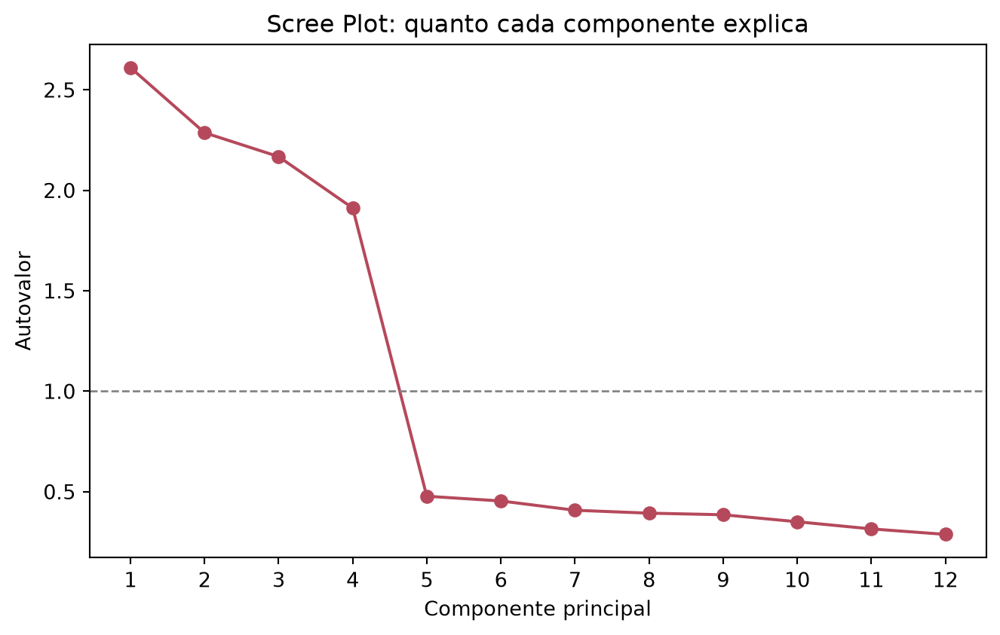

Sua marca de cosméticos aplicou uma pesquisa com 20 perguntas sobre hábitos de compra em 250 consumidoras: preço, ingredientes naturais, embalagem, indicação de influenciadoras, ritual de autocuidado… Quando os resultados chegam, o time de marketing te encara e pergunta: “e aí, no fim das contas, o que realmente faz ela comprar?”. Com 20 variáveis correlacionadas entre si, essa pergunta simples vira um pesadelo de planilha — a menos que você conheça o PCA (Análise de Componentes Principais).
💄 O Problema: Pesquisa Longa, Insight Curto
Pesquisas de comportamento de consumo raramente têm poucas perguntas. Para capturar a experiência de compra de uma consumidora de beleza, é comum perguntar sobre preço, promoções, ingredientes naturais, embalagem sustentável, indicação de influenciadoras, redes sociais, textura, cheiro, rotina de autocuidado… e a lista não para de crescer.
O problema é que essas variáveis não são independentes entre si. Quem se preocupa com “ingredientes naturais” tende também a valorizar “embalagem sustentável”. Quem “compra por indicação de influenciadora” também costuma “seguir marcas nas redes sociais”. Olhar item por item, um relatório com 20 barras de gráfico, não revela isso — só empilha números que, no fundo, estão contando histórias parecidas.
Quando dezenas de perguntas se movem juntas, elas não são 20 histórias diferentes — são poucas histórias contadas de formas diferentes. O trabalho do PCA é encontrar essas poucas histórias.
🧠 O Que é Redução de Dimensionalidade
Imagine que alguém te entregasse um livro de 300 páginas e pedisse um resumo. Você não vai repetir a obra palavra por palavra — vai destilar a essência em 3 ou 4 ideias-chave que carregam o que realmente importa, sem te fazer perder o enredo.
É exatamente isso que a redução de dimensionalidade faz com dados numéricos: pega um conjunto grande de variáveis correlacionadas (as “300 páginas”) e o resume em um punhado de novas variáveis, os componentes, que preservam o máximo possível da informação original (o “enredo”).
O PCA (Principal Component Analysis) é o método mais usado para isso. Ele não escolhe subjetivamente quais perguntas “parecem” mais importantes; ele calcula, matematicamente, as combinações de variáveis que capturam a maior variabilidade possível dos dados.
🔍 Como o PCA Funciona
O PCA cria novos eixos, os componentes principais, como combinações lineares das variáveis originais. O primeiro componente é escolhido para capturar a maior fatia possível da variância dos dados. O segundo componente captura a maior fatia da variância que sobrou, com a restrição de ser ortogonal (não correlacionado) ao primeiro. E assim por diante.
Cada componente principal é um novo “eixo de leitura” dos dados, construído para enxergar o máximo de variação com o mínimo de eixos possível.
Na prática, isso significa que, em vez de 20 perguntas correlacionadas, você pode acabar com 3 ou 4 componentes que já capturam a maior parte do que diferencia uma consumidora da outra, cada um combinando várias perguntas originais.
🧪 Simulando uma Pesquisa de Comportamento de Consumo
Vamos simular uma pesquisa com 250 consumidoras de uma marca de beleza, respondendo a 12 afirmações em uma escala Likert de 1 (discordo totalmente) a 7 (concordo totalmente). Por trás dessas 12 perguntas, vamos construir de propósito 4 traços latentes que a marca não vê diretamente na planilha: economia, consciência verde, influência social e autocuidado.
Note que, na vida real, a marca só teria acesso às 12 colunas de respostas, o que gerou cada resposta por trás dos panos é justamente o que o PCA vai tentar reconstruir a partir dos dados observados.
Construto (não revelado à consumidora)
Itens de exemplo
Economia / Custo-benefício
“O preço é decisivo na minha compra”, “Só compro em promoção”
Consciência verde / Sustentabilidade
“Prefiro produtos veganos e cruelty-free”, “Valorizo embalagens sustentáveis”
Influência social / Redes
“Compro por indicação de influenciadoras”, “Decido com base em resenhas de outras consumidoras”
Autocuidado / Experiência sensorial
“Tenho um ritual diário de skincare”, “Escolho produtos pela textura e pelo cheiro”
🧼 Preparando os Dados: Por Que Padronizar Antes do PCA
O PCA busca as direções de maior variância, e variáveis com escalas maiores dominam esse cálculo só por terem números maiores, não porque são mais importantes. Mesmo aqui, com todos os itens na mesma escala Likert (1 a 7), é um hábito essencial padronizar: cada variável passa a ter média 0 e desvio-padrão 1, e passa a competir em pé de igualdade pela variância.
from sklearn.preprocessing import StandardScalerX = StandardScaler().fit_transform(dados)
📉 Quantos Componentes Realmente Importam?
Antes de decidir em quantos componentes resumir os dados, vale olhar quanta variância cada um deles é capaz de capturar. Ajustamos o PCA com todos os componentes possíveis (12, um para cada item original) só para inspecionar essa distribuição:
import matplotlib.pyplot as pltfrom sklearn.decomposition import PCApca_completo = PCA()pca_completo.fit(X)variancia_explicada = pca_completo.explained_variance_ratio_autovalores = pca_completo.explained_variance_plt.figure(figsize=(7, 4.5))plt.plot(range(1, len(variancia_explicada) +1), autovalores, "o-", color="#B5495B")plt.axhline(y=1, color="grey", linestyle="--", linewidth=1)plt.xlabel("Componente principal")plt.ylabel("Autovalor")plt.title("Scree Plot: quanto cada componente explica")plt.xticks(range(1, len(variancia_explicada) +1))plt.tight_layout()plt.show()

Esse gráfico é chamado de scree plot. Duas regras práticas ajudam a decidir onde parar:
Regra do cotovelo: procurar o ponto em que a curva “quebra” e passa a cair devagar — os componentes depois dele agregam pouco.
Critério de Kaiser: reter componentes com autovalor acima de 1 (a linha tracejada no gráfico), já que abaixo disso o componente explica menos variância do que uma única variável original explicaria sozinha.
Com uma estrutura de 4 traços latentes por trás dos dados, é esperado que o cotovelo apareça por volta do quarto componente: os quatro primeiros concentram a maior parte da variância, e os demais são essencialmente ruído.
🧩 Interpretando as Cargas: O Que Cada Componente Representa?
Reter os componentes é só metade do trabalho. A outra metade, a mais interessante para o marketing, é entender o que cada componente significa. Para isso, olhamos as cargas (loadings): o quanto cada variável original “pesa” em cada componente.
Ordenando as maiores cargas absolutas de cada coluna, o padrão que emerge é justamente o desenho da simulação:
PC1 concentra cargas altas em indicação de influenciadora, redes sociais e resenhas → um eixo de Influência Social.
PC2 concentra cargas altas em preco_e_decisivo, compra_em_promocao e compara_precos_antes → um eixo de Economia / Custo-Benefício.
PC3 concentra cargas altas em ritual de skincare, textura e autocuidado → um eixo de Autocuidado / Experiência Sensorial.
PC4 concentra cargas altas nos itens de ingredientes naturais e embalagem → um eixo de Consciência Verde.
O PCA não sabia, de antemão, que existiam “economia”, “sustentabilidade”, “influência social” e “autocuidado” nos dados. Ele apenas encontrou os eixos de maior variância, o trabalho de dar nome a eles, e de verificar se fazem sentido para o negócio, continua sendo humano.
🎨 Visualizando as Consumidoras no Novo Espaço (Biplot)
Com os component scores em mãos (a posição de cada consumidora nesses novos eixos), podemos visualizar as 250 respondentes no plano formado pelos dois primeiros componentes, com os vetores de carga das variáveis originais sobrepostos, o chamado biplot:
Cada seta aponta na direção em que aquele item da pesquisa “cresce”. Setas próximas e apontando para o mesmo lado (como os três itens de economia) indicam variáveis fortemente correlacionadas, que o PCA já comprimiu em um único eixo. Setas em direções bem diferentes (economia vs. consciência verde) indicam dimensões relativamente independentes de comportamento.
🛍️ Da Estatística à Estratégia de Marketing
O ganho prático é direto: em vez de reportar 12 (ou 20) barras de gráfico para o time de marketing, a marca passa a trabalhar com 4 índices interpretáveis por consumidora, os component scores de Economia, Consciência Verde, Influência Social e Autocuidado. Uma consumidora com score alto em “Influência Social” e baixo em “Economia”, por exemplo, provavelmente responde melhor a uma campanha com uma influenciadora do que a um cupom de desconto.
Esses 4 índices também são a matéria-prima perfeita para o próximo passo natural: agrupar as consumidoras em perfis de compra com um algoritmo de segmentação (como o K-Means) rodando sobre os component scores em vez das 12 variáveis originais, tema para um próximo post por aqui.
🔬 PCA não é Análise Fatorial (e por que isso importa em psicometria)
Vale um adendo rápido para quem trabalha com escalas psicométricas: PCA e Análise Fatorial Exploratória (AFE) são frequentemente confundidos, mas partem de suposições diferentes.
Aspecto
PCA (sklearn.decomposition.PCA)
Análise Fatorial Exploratória
Objetivo
Maximizar variância explicada dos dados observados
Modelar a variância compartilhada por um construto latente
Assume erro de medida?
Não
Sim
Uso típico
Compressão/redução de dimensionalidade, pré-processamento
Validação psicométrica de escalas
Onde aprofundar
sklearn.decomposition
factor_analyzer (Python) / psych, lavaan (R)
Para o objetivo deste post, comprimir 12 perguntas em poucos índices úteis para o negócio, o PCA é a ferramenta certa. Já quando o objetivo é validar formalmente uma escala (por exemplo, confirmar que um questionário de satisfação realmente mede os construtos que ele diz medir), a Análise Fatorial costuma ser a escolha mais apropriada. Fica o gancho para um post futuro.
🎯 Em resumo:
Etapa
O que fizemos
Por quê
Simulação
Geramos 12 itens de escala Likert a partir de 4 traços latentes
Reproduzir uma pesquisa real de comportamento de consumo
Padronização
Aplicamos StandardScaler antes do PCA
Evitar que a escala das variáveis distorça a variância
Scree plot
Olhamos explained_variance_ratio_/autovalores
Decidir quantos componentes reter (cotovelo/Kaiser)
Loadings
Inspecionamos pca.components_
Nomear os componentes com significado de negócio
Biplot
Plotamos os scores com os vetores de carga
Visualizar consumidoras e itens no mesmo espaço
Aplicação
Reduzimos 12 perguntas a 4 índices interpretáveis
Alimentar decisões de marketing e segmentação futura
Reduzir dimensionalidade não é “perder informação”: é separar o sinal do ruído para que 20 perguntas correlacionadas virem 3 ou 4 respostas que o time de marketing realmente consegue usar.
Da próxima vez que uma pesquisa de consumo chegar até você carregando dezenas de colunas correlacionadas, você já sabe por onde começar. Testou o PCA na sua própria base? Me chama no WhatsApp e me conta o que encontrou.
EDA | TESTE T | ENQUETES | ANOVA | MODELOS DE REGRESSÃO | ANÁLISE FATORIAL | MODELAGEM DE EQUAÇÕES ESTRUTURAIS | TRI | RASCH MODELS | MACHINE LEARNING